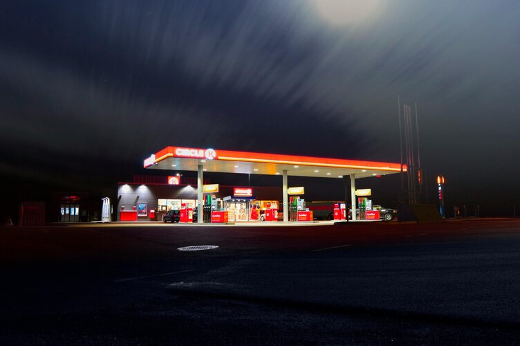
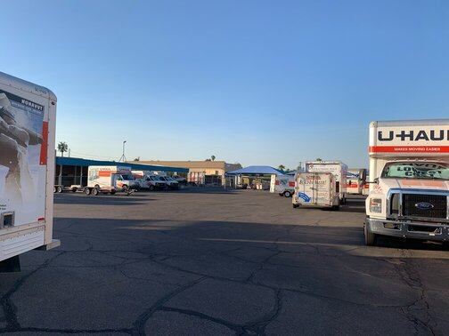

Resume
For brevity’s sake, this resume will include the 3 most recent jobs I’ve worked at time of writing.
This isn’t meant to be a complete job history (I have other resources for that),
rather, this is a quick glance at the latest positions I’ve worked.
AI Trainer at Data Annotation
This is a remote position that I recently acquired. It’s a rather unique job. It is mainly composed of contract work that revolves around generating quality data to train LLMs. I’ve done a variety of work here, from writing simple python programs to short creative writing pieces. I’m excited to see where this position can take me.
Gas Station Manager at Apache Sands Service Station
This is a position I currently work. We have a full service gas station, meaning I’m in charge of managing not only your traditional gas pumps, but I also fill propane tanks and maintain our self-service car wash. It’s a lot of work, but it’s simple, and I’ve enjoyed my time here.
U-Haul Neighborhood Dealer at Apache Sands
I worked this position up until Apache Sands decided to close down their U-Haul operations, at which point I took over as their gas station manager as listed above. As a neighborhood dealer, I was the sole employee responsible for scheduling U-Haul moving truck reservations, dispatching rentals, retailing sales, and maintaining 40+ trucks and trailers. It was a very intense job, but I enjoyed the challenge.
